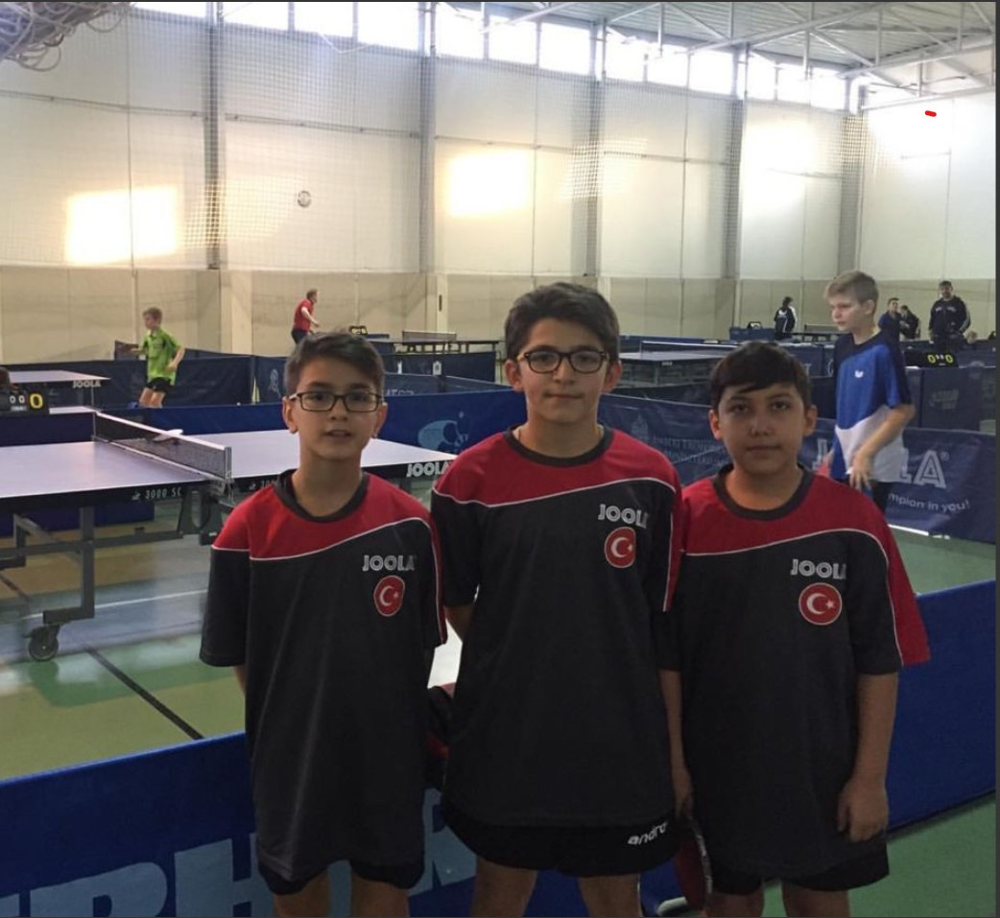
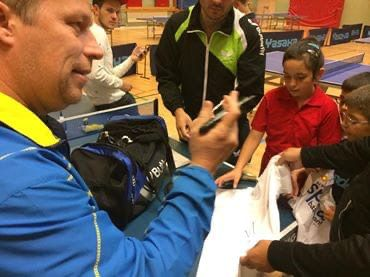

Merhaba, Ben Mustafa Uçar
Masa tenisi tutkunu ve gezmeyi seven bir bilgisayar mühendisliği öğrencisiyim. Sakarya Üniversitesi Bilgisayar Mühendisliği 1. sınıf öğrencisiyim. Ayrıca milli masa tenisi sporcusuyum.

Masa Tenisi
Haftada 3 gün yerel spor kulübünde antrenman yapıyorum. #TurnuvaHazırlıkları

Macaristan Turnuvası

Jon O Waldner'le Tanışma
İsveçli efsane masa tenisi oyuncusu

Yerel Keşifler İsveç Stokholm
Yerel Keşifler Budapeşte
Şehir Keşifleri
Düzenli maçlara gittiğim için bir sürü şehir gezme fırsatım oldu.
Eğitim Geçmişim
Sakarya Üniversitesi
Bilgisayar Mühendisliği - 2023-2028
2.sınıf olucak umarım 🐺